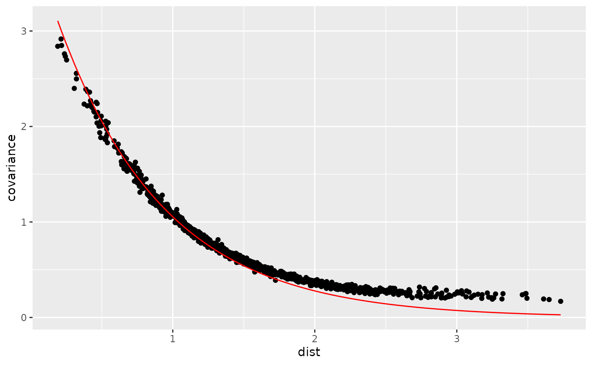

spde3d.RmdThe inlamesh3d package is a temporary add-on package for
INLA to test new code for using tetrahedralisation meshes
for 3D SPDE models. Load INLA first, so that the new
methods provided by inlamesh3d take precedence:
library(INLA)
#> Loading required package: Matrix
#> Loading required package: sp
#> The legacy packages maptools, rgdal, and rgeos, underpinning the sp package,
#> which was just loaded, will retire in October 2023.
#> Please refer to R-spatial evolution reports for details, especially
#> https://r-spatial.org/r/2023/05/15/evolution4.html.
#> It may be desirable to make the sf package available;
#> package maintainers should consider adding sf to Suggests:.
#> The sp package is now running under evolution status 2
#> (status 2 uses the sf package in place of rgdal)
#> This is INLA_23.06.25 built 2023-06-25 06:51:12 UTC.
#> - See www.r-inla.org/contact-us for how to get help.
library(inlamesh3d)
#>
#> Attaching package: 'inlamesh3d'
#> The following objects are masked from 'package:INLA':
#>
#> inla.mesh.fem, inla.spde.make.A, inla.spde2.matern,
#> inla.spde2.pcmaternTo test the basic features, we construct a mesh with a single tetrahedron:
The finite element structure matrices can be obtained in the same way as for the traditional 2D triangle meshes:
fem <- inlamesh3d::inla.mesh.fem(mesh)We can extract the matrices to construct a precision matrix manually, for \((1-\nabla\cdot\nabla)u(s)=\dot{W}(s)\):
Q <- with(fem, c0 + 2 * g1 + g2)
solve(Q)
#> 4 x 4 sparse Matrix of class "dgCMatrix"
#>
#> [1,] 6.062284 5.979239 5.979239 5.979239
#> [2,] 5.979239 6.646920 5.686920 5.686920
#> [3,] 5.979239 5.686920 6.646920 5.686920
#> [4,] 5.979239 5.686920 5.686920 6.646920On a larger 3D domain, this model has an exponential covariance function, but with just a single tetrahedron, and Neumann boundary conditions, we should not expect to see this in this test case.
The new param2.matern method is used to construct the
covariance parameter prior distribution model, which is then used by the
new version of inla.spde2.matern:
spde <- inlamesh3d::inla.spde2.matern(
mesh,
param = param2.matern(mesh,
alpha = 2,
prior_range = 0.1,
prior_sigma = 1))The internal parameterisation used by param2.matern is
different to the old param2.matern.orig parameterisation,
and is more similar to the one used by inla.spde2.pcmatern,
in that the user-visible aspects are range and standard deviation
instead of \(\tau\) and \(\kappa\).
Mapping data locations works the same as before. Here we verify that mapping the mesh vertices themselves produces an identity matrix:
A <- inlamesh3d::inla.spde.make.A(mesh, mesh$loc)
#> Handling: #T = 1, #loc = 4, #loc/#T = 4
#> Handled: Time/(10^3 Tetra) = 1
A
#> 4 x 4 sparse Matrix of class "dgCMatrix"
#>
#> [1,] 1 0 0 0
#> [2,] 0 1 0 0
#> [3,] 0 0 1 0
#> [4,] 0 0 0 1
mesh_n <- 1000
mesh_loc <- matrix(rnorm(mesh_n * 3), mesh_n, 3)
tetra <- geometry::delaunayn(mesh_loc)
mesh <- inla.mesh3d(loc = mesh_loc, tv = tetra)
range0 <- 1 # Prior median range
sigma0 <- 1 # Prior median standard deviation
spde <- inlamesh3d::inla.spde2.matern(
mesh,
param = param2.matern(mesh,
alpha = 2,
prior_range = range0,
prior_sigma = sigma0))The parameterisation is in log-range and log-sigma relative to the
prior medians, so that
theta = log(c(range, sigma) / c(range0, sigma0)) is used to
specify the internal parameter vector:
Q <- inla.spde2.precision(spde, theta = log(c(1.5, 2) / c(range0, sigma0)))
A0 <- inlamesh3d::inla.spde.make.A(mesh, cbind(0,0,0))
#> Splitting 1 into L: #T = 3238 #loc = 1
#> Splitting 2 into L: #T = 1619 #loc = 1
#> Splitting 3 into L: #T = 810 #loc = 1
#> Handling: #T = 810, #loc = 1, #loc/#T = 0.00123456790123457
#> Handled: Time/(10^3 Tetra) = 0.131
#> Splitting 3 into R: #T = 809 #loc = 1
#> Handling: #T = 809, #loc = 1, #loc/#T = 0.00123609394313968
#> Handled: Time/(10^3 Tetra) = 0.138
#> Splitting 2 into R: #T = 1619 #loc = 1
#> Splitting 3 into L: #T = 810 #loc = 1
#> Handling: #T = 810, #loc = 1, #loc/#T = 0.00123456790123457
#> Handled: Time/(10^3 Tetra) = 0.141
#> Splitting 3 into R: #T = 809 #loc = 1
#> Handling: #T = 809, #loc = 1, #loc/#T = 0.00123609394313968
#> Handled: Time/(10^3 Tetra) = 0.126
#> Splitting 1 into R: #T = 3237 #loc = 1
#> Splitting 2 into L: #T = 1619 #loc = 1
#> Splitting 3 into L: #T = 810 #loc = 1
#> Handling: #T = 810, #loc = 1, #loc/#T = 0.00123456790123457
#> Handled: Time/(10^3 Tetra) = 0.123
#> Splitting 3 into R: #T = 809 #loc = 1
#> Handling: #T = 809, #loc = 1, #loc/#T = 0.00123609394313968
#> Handled: Time/(10^3 Tetra) = 0.131
#> Splitting 2 into R: #T = 1618 #loc = 1
#> Splitting 3 into L: #T = 809 #loc = 1
#> Handling: #T = 809, #loc = 1, #loc/#T = 0.00123609394313968
#> Handled: Time/(10^3 Tetra) = 0.133
#> Splitting 3 into R: #T = 809 #loc = 1
#> Handling: #T = 809, #loc = 1, #loc/#T = 0.00123609394313968
#> Handled: Time/(10^3 Tetra) = 0.127
D0 <- rowSums(mesh$loc^2)^0.5
ggplot2::ggplot(data.frame(dist = D0,
covariance = as.vector(solve(Q, t(A0))),
exponential = 2^2 * exp(-D0 * (sqrt(8 * 0.5) / 1.5)))) +
ggplot2::geom_point(ggplot2::aes(dist, covariance)) +
ggplot2::geom_line(ggplot2::aes(dist, exponential), col = "red") We can see some boundary effect due to the finite domain but overall the covariances follow the theory.
Let’s simulate a field and observe at some locations (here chosen as a subset of the mesh points):
x <- inla.qsample(1, Q)[, 1]
loc <- mesh$loc[seq_len(100), , drop = FALSE]
Aobs <- inlamesh3d::inla.spde.make.A(mesh, loc)
#> Splitting 1 into L: #T = 3238 #loc = 99
#> Splitting 2 into L: #T = 1619 #loc = 94
#> Splitting 3 into L: #T = 810 #loc = 91
#> Handling: #T = 810, #loc = 91, #loc/#T = 0.112345679012346
#> Handled: Time/(10^3 Tetra) = 0.844
#> Splitting 3 into R: #T = 809 #loc = 84
#> Handling: #T = 809, #loc = 84, #loc/#T = 0.103831891223733
#> Handled: Time/(10^3 Tetra) = 0.697
#> Splitting 2 into R: #T = 1619 #loc = 91
#> Splitting 3 into L: #T = 810 #loc = 90
#> Handling: #T = 810, #loc = 90, #loc/#T = 0.111111111111111
#> Handled: Time/(10^3 Tetra) = 0.775
#> Splitting 3 into R: #T = 809 #loc = 86
#> Handling: #T = 809, #loc = 86, #loc/#T = 0.106304079110012
#> Handled: Time/(10^3 Tetra) = 0.675
#> Splitting 1 into R: #T = 3237 #loc = 98
#> Splitting 2 into L: #T = 1619 #loc = 98
#> Splitting 3 into L: #T = 810 #loc = 85
#> Handling: #T = 810, #loc = 85, #loc/#T = 0.104938271604938
#> Handled: Time/(10^3 Tetra) = 0.72
#> Splitting 3 into R: #T = 809 #loc = 93
#> Handling: #T = 809, #loc = 93, #loc/#T = 0.11495673671199
#> Handled: Time/(10^3 Tetra) = 0.787
#> Splitting 2 into R: #T = 1618 #loc = 68
#> Splitting 3 into L: #T = 809 #loc = 57
#> Handling: #T = 809, #loc = 57, #loc/#T = 0.0704573547589617
#> Handled: Time/(10^3 Tetra) = 0.582
#> Splitting 3 into R: #T = 809 #loc = 64
#> Handling: #T = 809, #loc = 64, #loc/#T = 0.0791100123609394
#> Handled: Time/(10^3 Tetra) = 0.6
data <- data.frame(y = as.vector(Aobs %*% x) + rnorm(nrow(loc), sd = 0.1))
stk <- inla.stack(data = list(y = data$y),
A = list(Aobs),
effects = list(inla.spde.make.index("field", spde$n.spde)))
est <- inla(y ~ -1 + f(field, model = spde),
data = inla.stack.data(stk, spde = spde),
control.predictor = list(A = inla.stack.A(stk)),
verbose = FALSE)Extracting the parameter estimates and transforming them to user-interpretable scale:
quant <- c("0.025quant", "0.5quant", "0.975quant")
param_estimates <- rbind(
range = exp(est$summary.hyperpar["Theta1 for field", quant]) * range0,
sigma = exp(est$summary.hyperpar["Theta2 for field", quant]) * sigma0,
obs_sigma = as.vector(as.matrix(
est$summary.hyperpar["Precision for the Gaussian observations", rev(quant)]^-0.5
))
)| 0.025quant | 0.5quant | 0.975quant | |
|---|---|---|---|
| range | 0.7741470 | 1.1276503 | 1.6844564 |
| sigma | 1.5758278 | 1.8078315 | 2.0850800 |
| obs_sigma | 0.0035864 | 0.0084585 | 0.0260916 |
The observation noise standard deviation is underestimated (true value was \(0.1\)), but the range and sigma parameters recover the true values, \(1.5\) and \(2\), respectively.
Experimental code:
plot(mesh)
locgrid <- as.matrix(expand.grid(1:10, 1:11, 1:12))+rnorm(10*11*12,sd=1e-6)
meshgrid <- inla.mesh3d(locgrid, geometry::delaunayn(locgrid))
plot(meshgrid,
include = c(0.5, 0.5, 1),
alpha=c(0.5, 0.5, 0.9),
fill_col = inla.generate.colors(meshgrid$loc)$colors)
rgl::clipplanes3d(rbind(c(1,0,0), c(0,1,0), c(0,0,1)), d = 0)Using a PC prior implementation. For illustration purposes, we use
priors with the true parameter values as prior medians for the spatial
range (range) and field standard deviation
(sigma).
spde2 <- inlamesh3d::inla.spde2.pcmatern(
mesh,
alpha = 2,
prior.range = c(range0, 0.5),
prior.sigma = c(sigma0, 0.5)
)
est2 <- inla(y ~ -1 + f(field, model = spde2),
data = inla.stack.data(stk, spde2 = spde2),
control.predictor = list(A = inla.stack.A(stk)),
verbose = FALSE)
param_estimates2 <- rbind(
range = est2$summary.hyperpar["Range for field", quant],
sigma = est2$summary.hyperpar["Stdev for field", quant],
obs_sigma = as.vector(as.matrix(
est2$summary.hyperpar["Precision for the Gaussian observations", rev(quant)]^-0.5
))
)| 0.025quant | 0.5quant | 0.975quant | |
|---|---|---|---|
| range | 0.7588523 | 1.1142142 | 1.6752677 |
| sigma | 1.5812684 | 1.8154292 | 2.0943116 |
| obs_sigma | 0.0036179 | 0.0084742 | 0.0264044 |